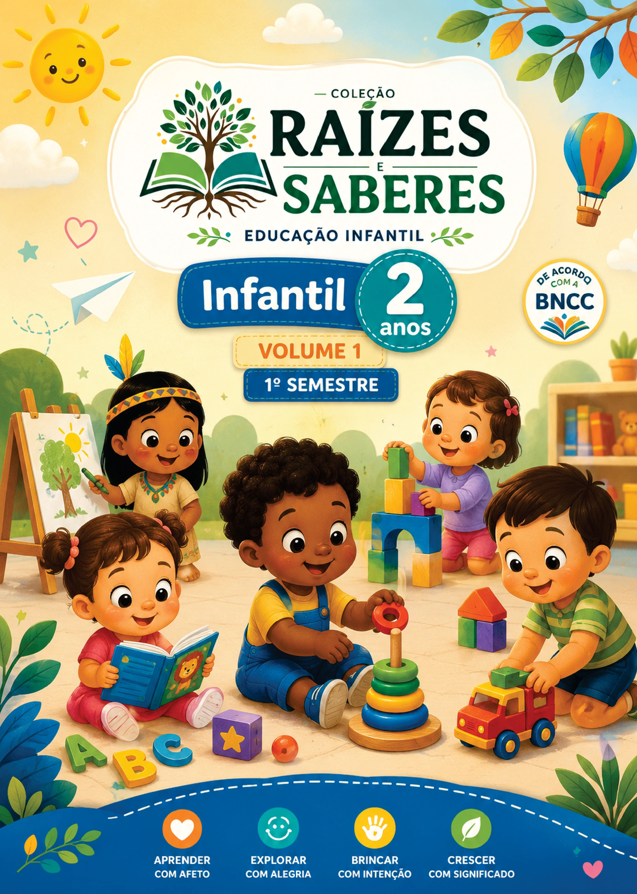
Infantil 2 anos
Volume 1
Livro do Aluno para apresentacao comercial da etapa.
Biblioteca Digital
Um ambiente visual e funcional para demonstrar livros, guias, colecoes e a futura integracao com o Book Viewer da plataforma.
Educacao Infantil
As capas oficiais disponiveis foram integradas como elemento visual principal do acervo, organizando volumes, laboratorio sensorial e guias por etapa.

Livro do Aluno para apresentacao comercial da etapa.
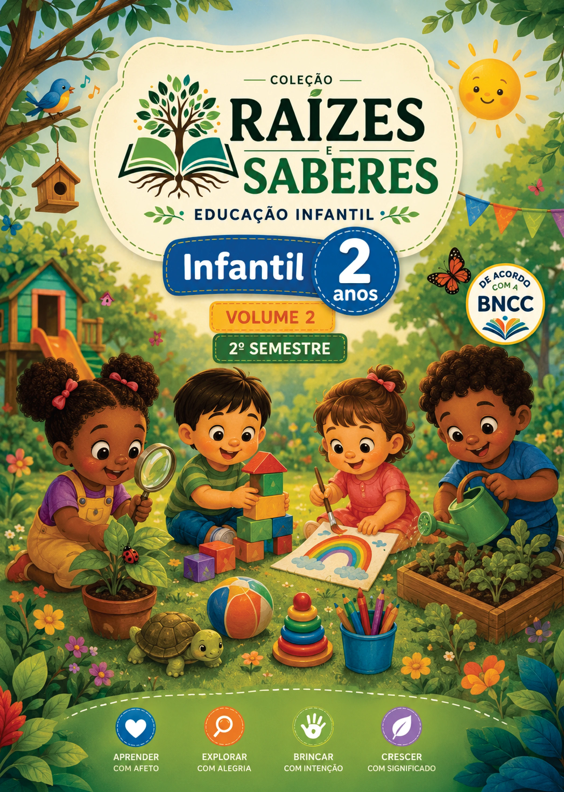
Continuidade da colecao para uso na biblioteca digital.
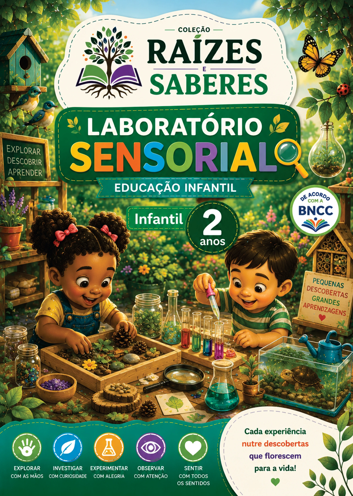
Experiencias exploratorias integradas a etapa Infantil 2 anos.
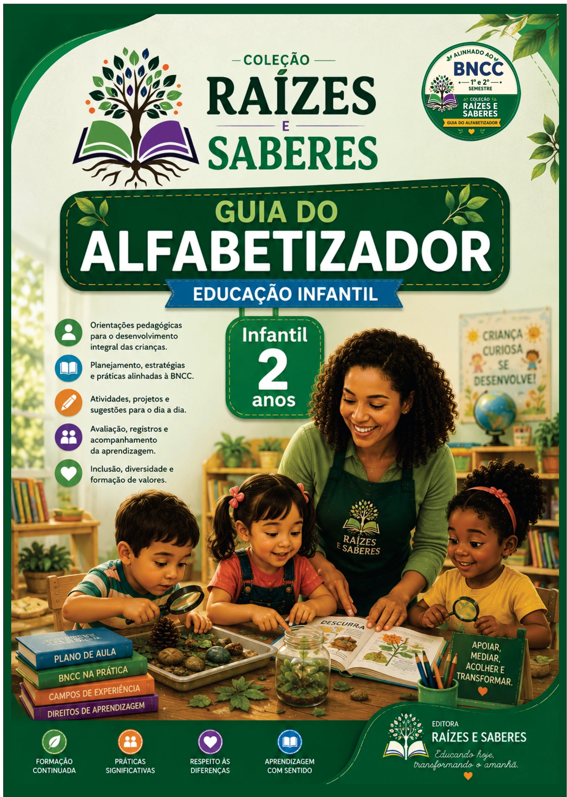
Material de apoio para planejamento e mediacao pedagogica.

Livro do Aluno para apresentacao comercial da etapa.
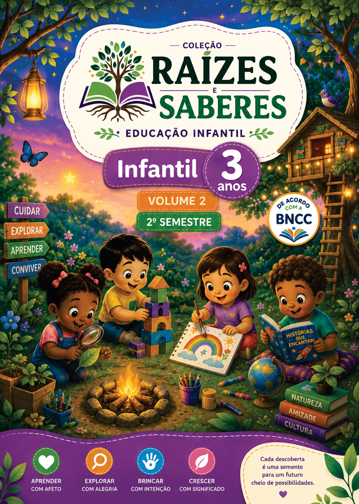
Continuidade da colecao para uso na biblioteca digital.
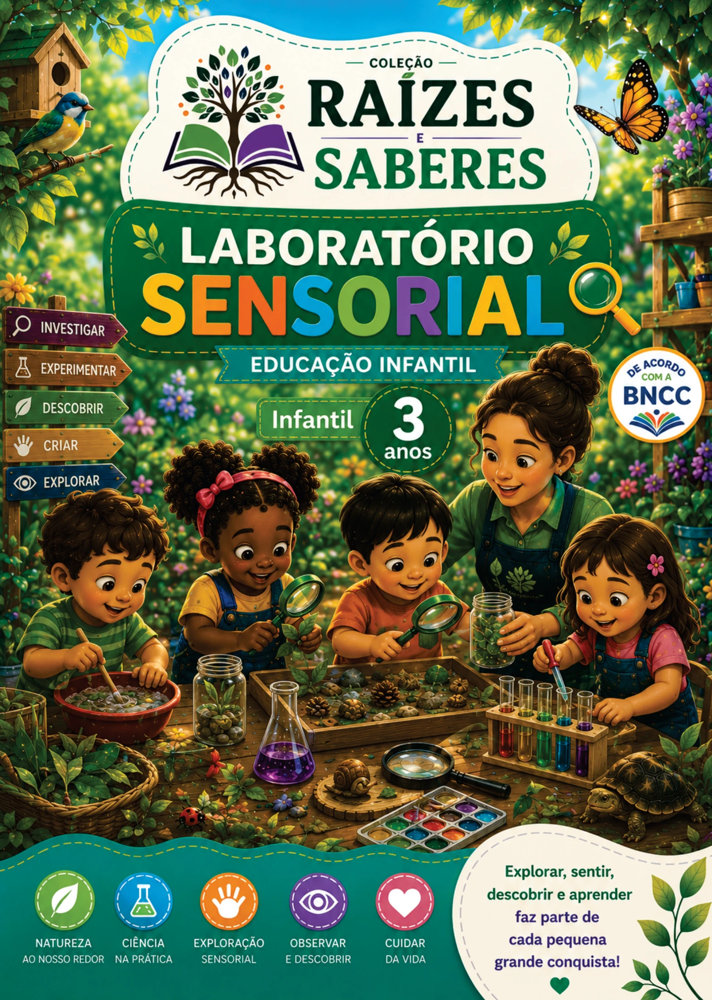
Experiencias exploratorias integradas a etapa Infantil 3 anos.
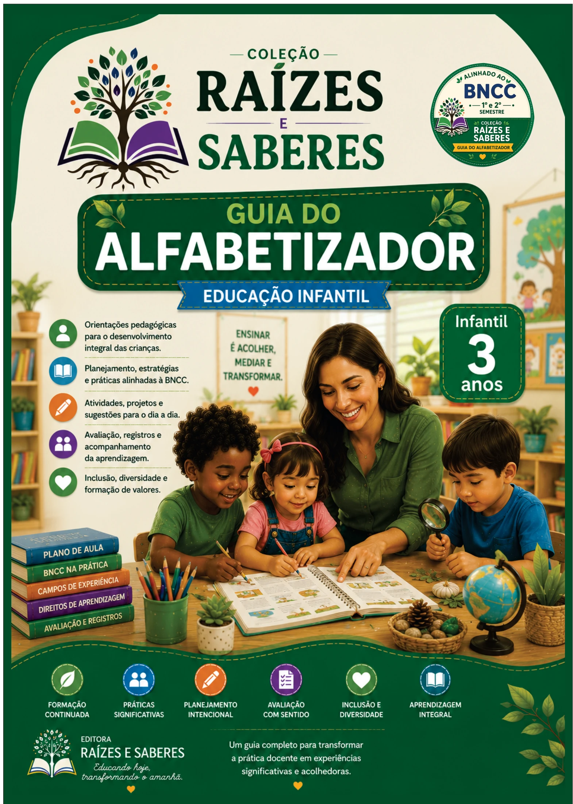
Material de apoio para planejamento e mediacao pedagogica.

Livro do Aluno para apresentacao comercial da etapa.
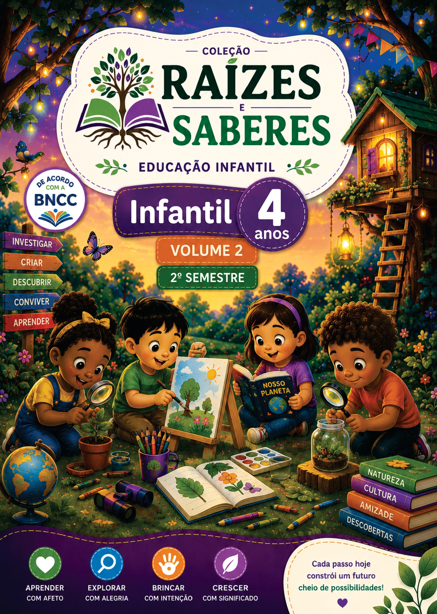
Continuidade da colecao para uso na biblioteca digital.
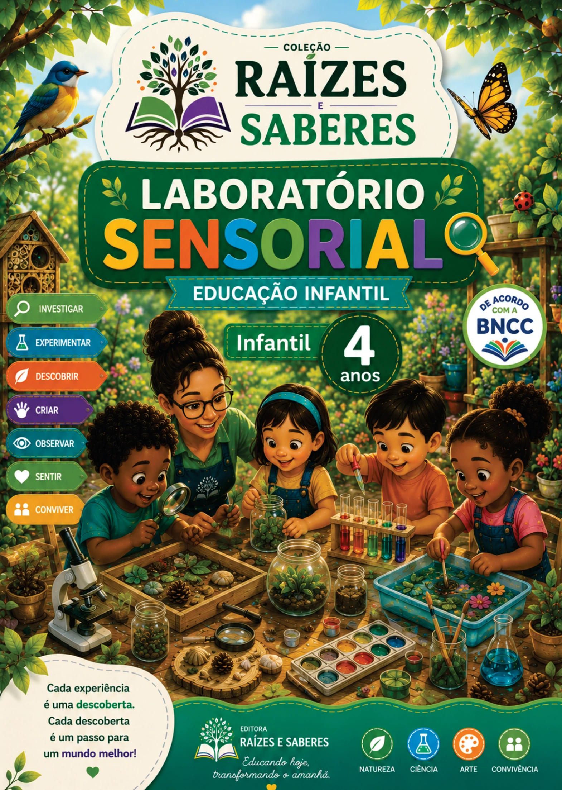
Experiencias exploratorias integradas a etapa Infantil 4 anos.
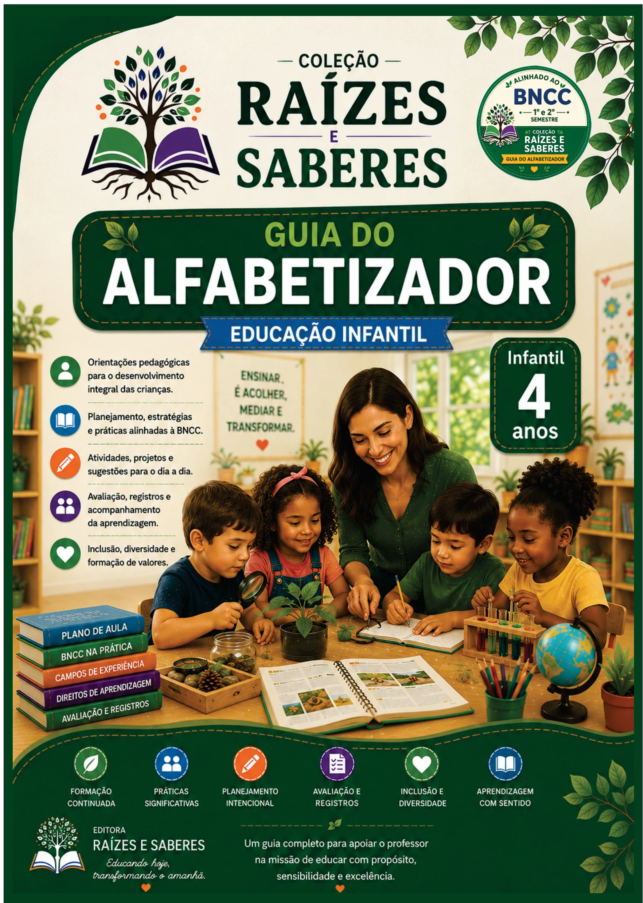
Material de apoio para planejamento e mediacao pedagogica.

Livro do Aluno para apresentacao comercial da etapa.
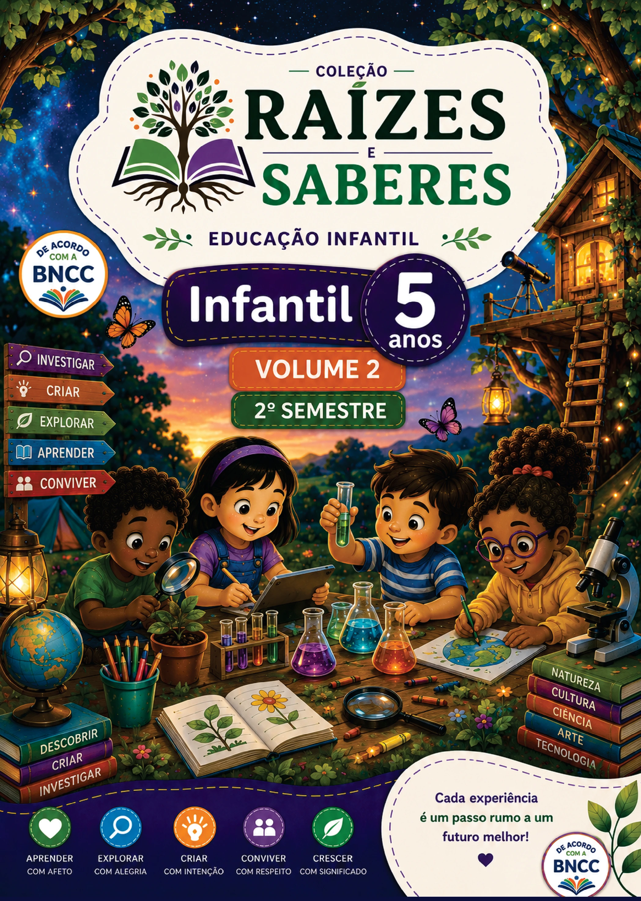
Continuidade da colecao para uso na biblioteca digital.
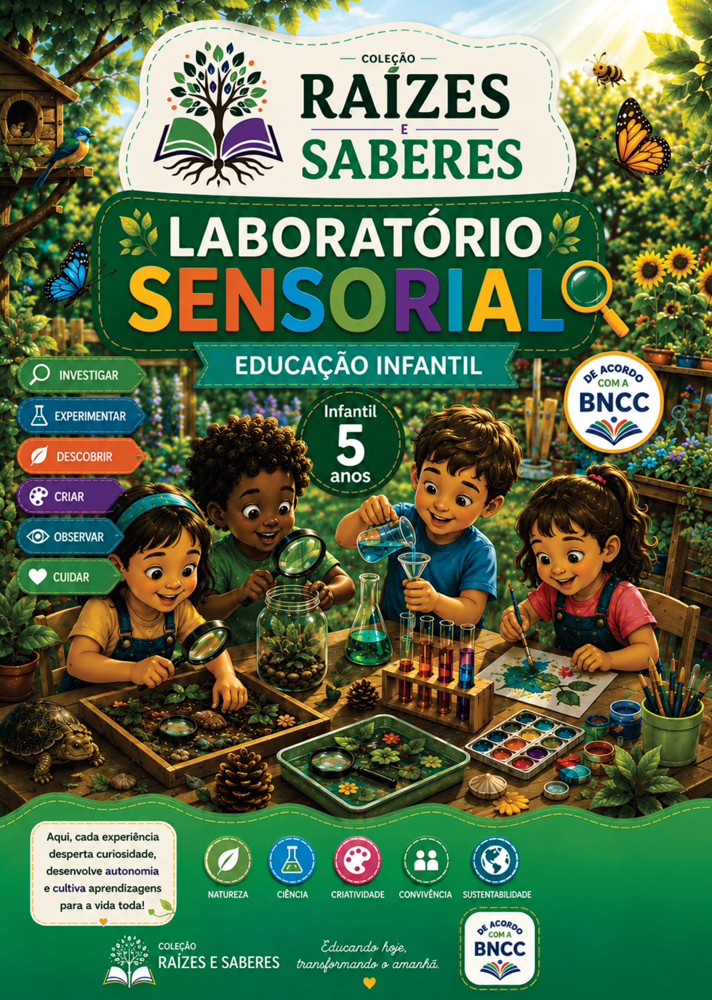
Experiencias exploratorias integradas a etapa Infantil 5 anos.
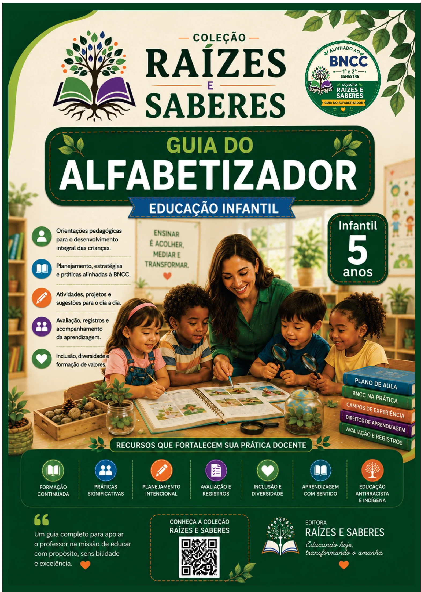
Material de apoio para planejamento e mediacao pedagogica.
Nenhum livro encontrado para esta pesquisa. Ajuste os filtros para visualizar o acervo.
Book Viewer
Este botao ja esta conectado ao fluxo demonstrativo. Na integracao definitiva, esta acao abrira o arquivo oficial no leitor digital da plataforma.